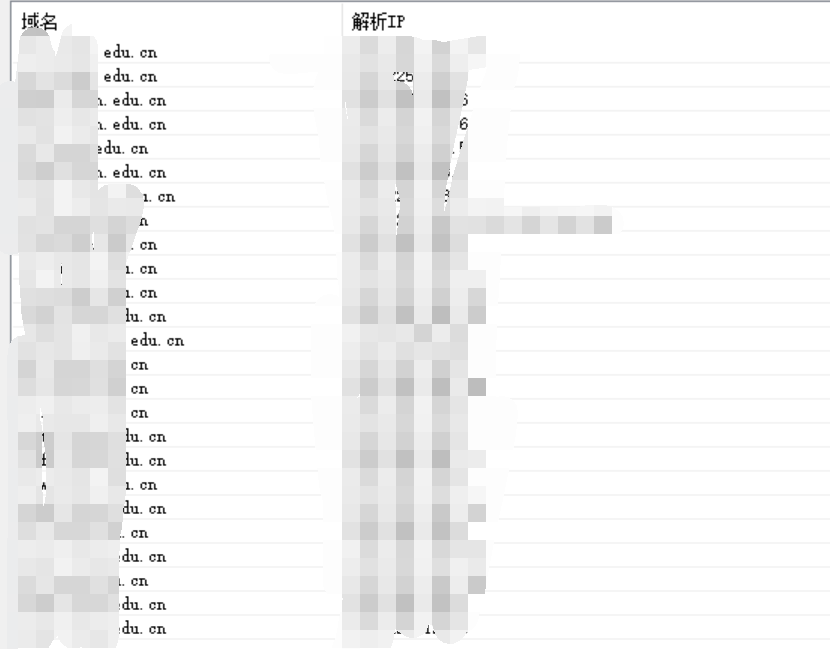
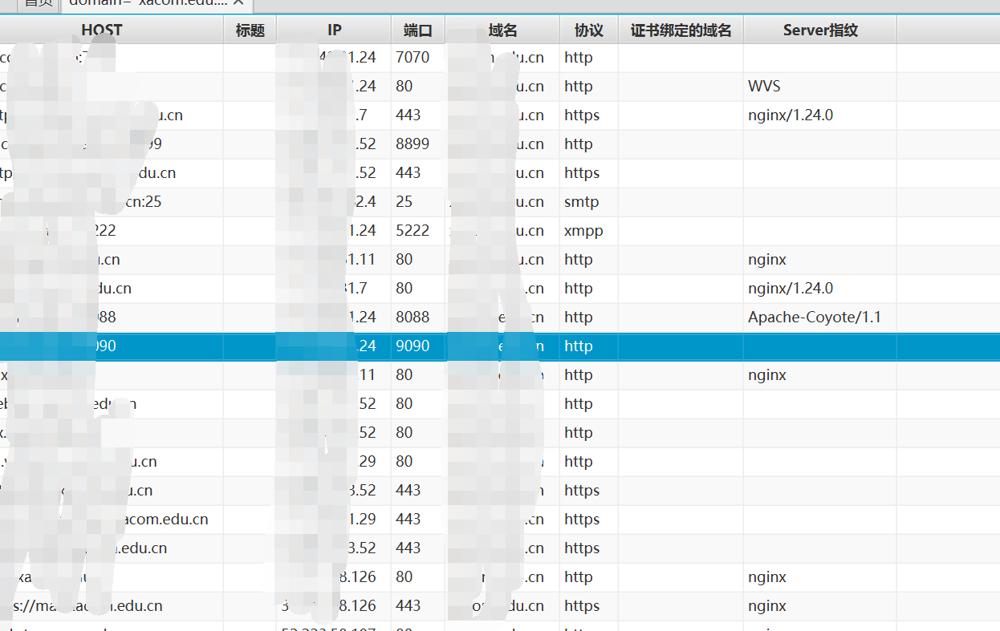
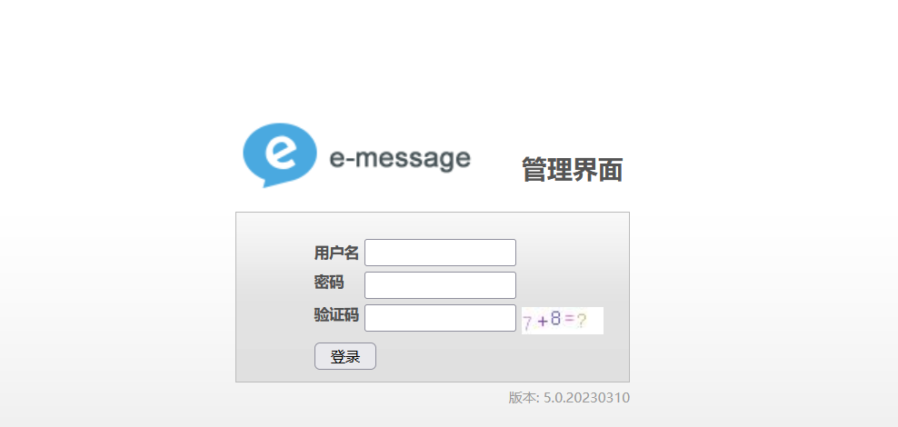
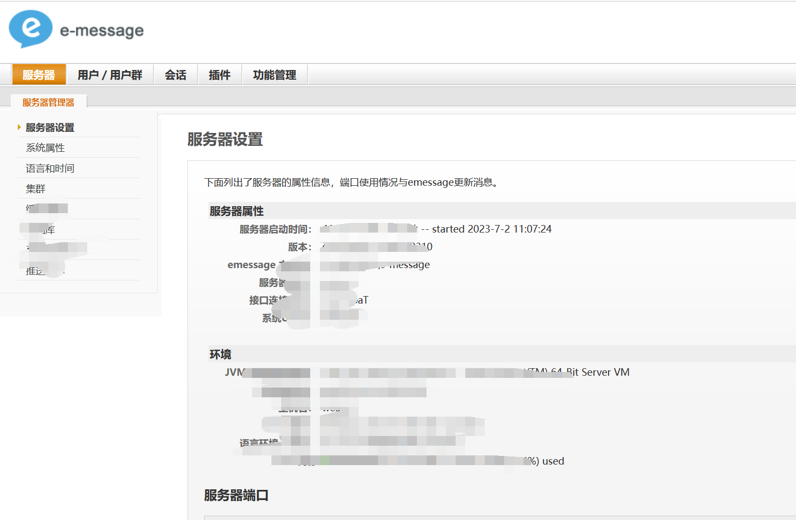
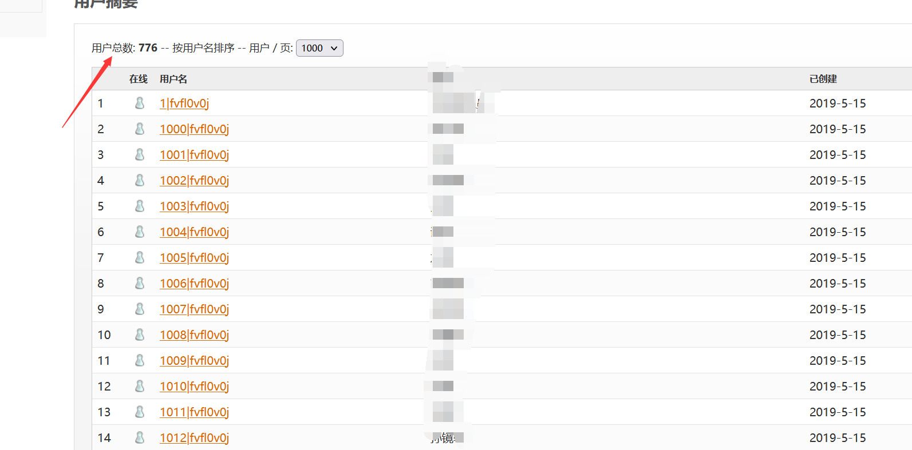
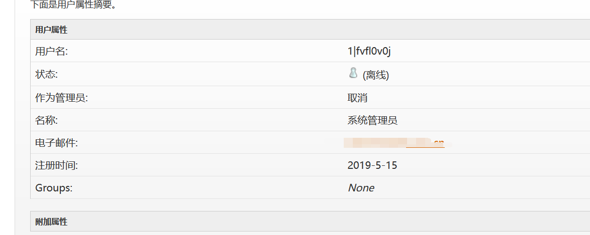

edu挖掘
文章发布时间:
最后更新时间:
文章总字数:
预计阅读时间:
最后更新时间:
文章总字数:
572
预计阅读时间:
1 分钟
前言
这里也是花了将近一周的时间加上运气成分才找到的，怎么说呢，这次成功的挖掘让我对前期的信息搜集有了切身的体会，真的应了那就话：信息搜集搜的越多，挖出来的也越多。
在这段时间前期很忧愁，感觉自己真废，什么也搞不出来，但也确实体会到了实战的环境，同时庆幸自己坚持了下来，虽然漏洞不怎么高级，但也算是良好的开端。
总结一句话：挖漏洞一定注重前期的信息搜集（虽然我挖出来了，但我仍然知道我信息搜集做的有点烂，这次之后一定注重细节了），另外就是一定要坚持，一时半会儿挖不出来很正常，但一定要坚持，想想自己的流程还有什么遗漏以及可以改进的地方。挖漏洞一定要耐心，不可聒噪。
漏洞挖掘
这里首先随机挑选一名幸运儿，我这里是随后进他官网，确定主域名，随机用子域名挖掘机，爆破子域名及ip

随后在用fofa_viewer扫描子域名，这样大概就比较准确了，不过这里也是感觉layer有点鸡肋，虽然字典强大，但感觉不怎么高效，看日后的作用吧。。。

测试一番发现可疑点，访问9090端口发现进入一个后台登录页面，这里也是某微OA漏洞，虽然我这里只是一个弱口令，但我相信肯定还有其他的漏洞，这次之后在进行尝试。

这里成功弱口令登录，用户名和密码都是admin，成功进入

这里也是发现七百多个用户的信息

其中有电子邮箱可能适合钓鱼。。。

总结
感觉没咋用力，这个系统功能点也很单一，对我个人来说没有再能进一步利用的点了，但我觉得这种类似的系统应该可以通杀，这就留给日后的测试吧。这里也是第一次挖，提交之后成功得到edu账号，没想到这还能评上中危。。。。
继续坚持！！！